SSO - ADFS
In this article, we will look at how to set up AD FS so that it can be used as an external identity provider for Subscription Manager, allowing single sign-on capability between AD FS and Subscription Manager.
Follow the steps below:
IIS
- Navigate to the location in IIS where Subscription Manager was installed.
Note
You can right-click on the application name in IIS and choose "Explore".
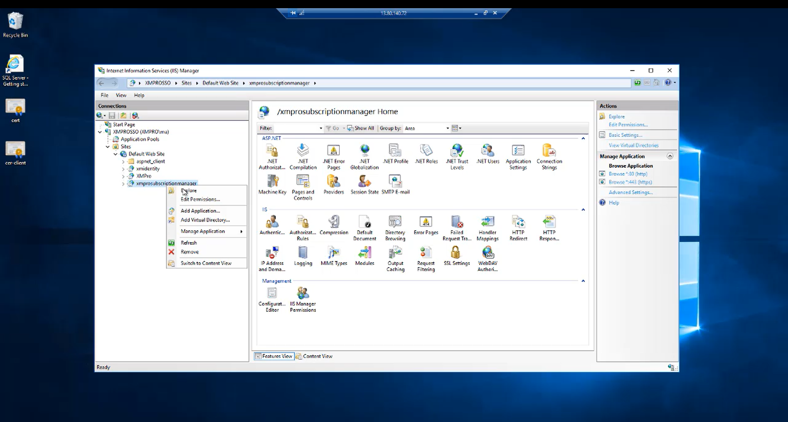
- Open the web.config file.
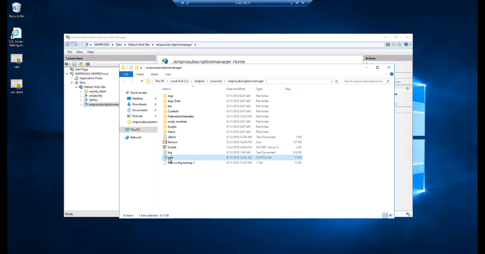
- Scroll down to the "xmpro" section.
Note
It might be encrypted, which will require you to decrypt it first. For instructions, please refer to the How to encrypt and decrypt a web.config file Knowledge Base article.
Under the "identityProviders" element, add a new element called "adfs".
Specify the metadata address of your AD FS, as per the image below:
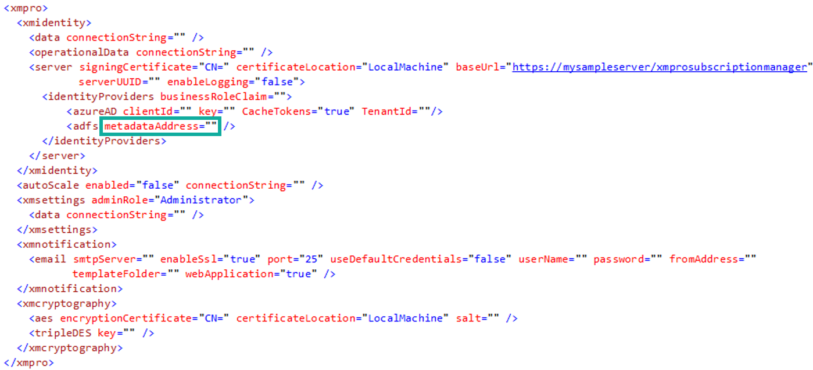
Note
Set the correct URL for the metadataAddress value. An example of how the URL might look is "_https://adfs.domain.com/federationmetadata/2007-06/federationmetadata.xml_".
Verify your URL by browsing to it in a browser.
- Copy the "baseUrl" value in the web.config - you will need it later in this guide.

Warning
You will use this value to create a relying party trust between the Subscription Manager application and AD FS
Server Manager
- Log on to your AD FS server and go to Tools –> AD FS Management
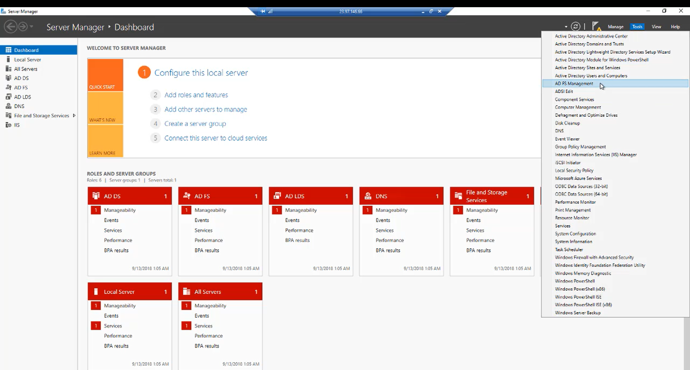
Relying Party Trust
- Click Add Relying Party Trust
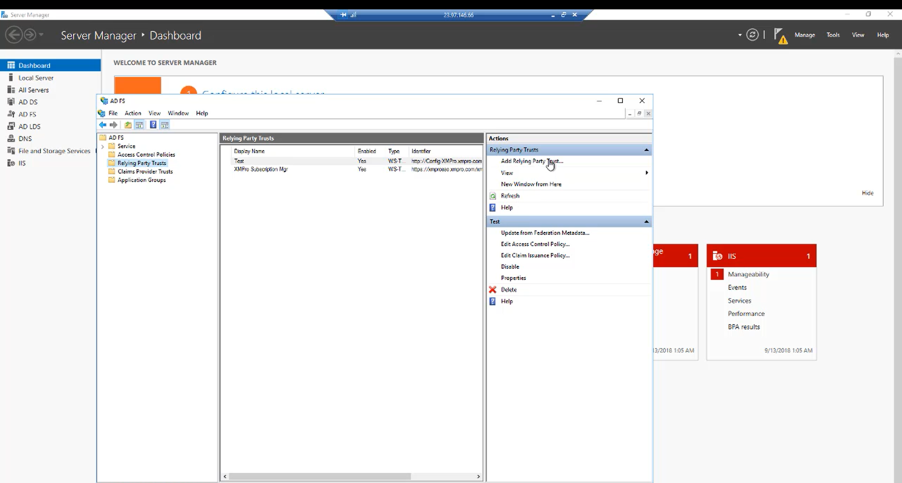
- Select Claims aware and click Start
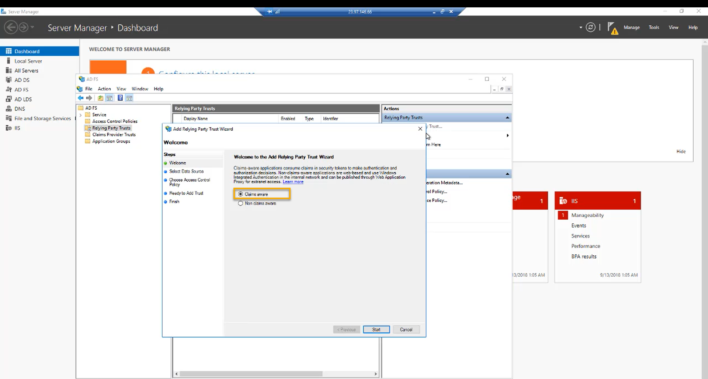
- Select Enter data about the relying party manually and click Next
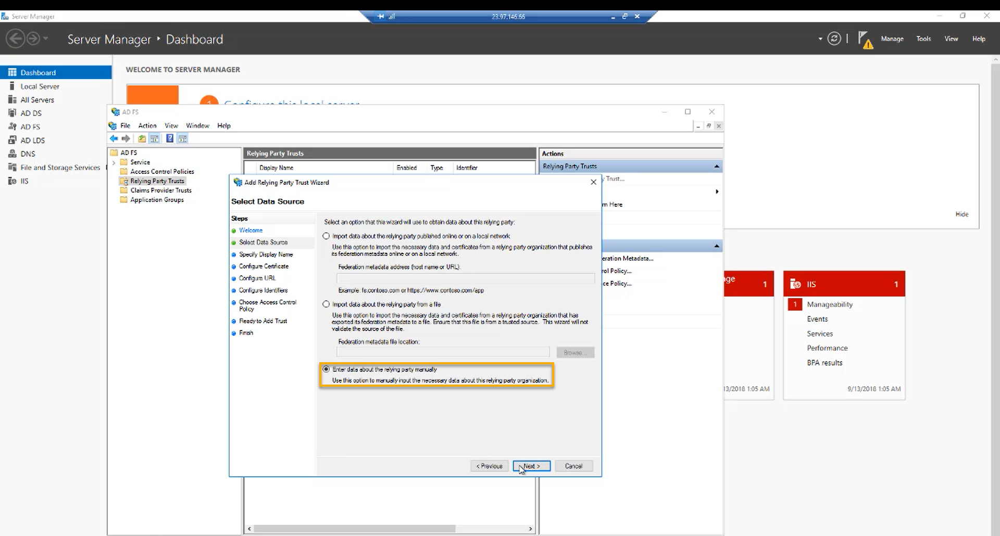
- Choose a display name and click Next and Next again
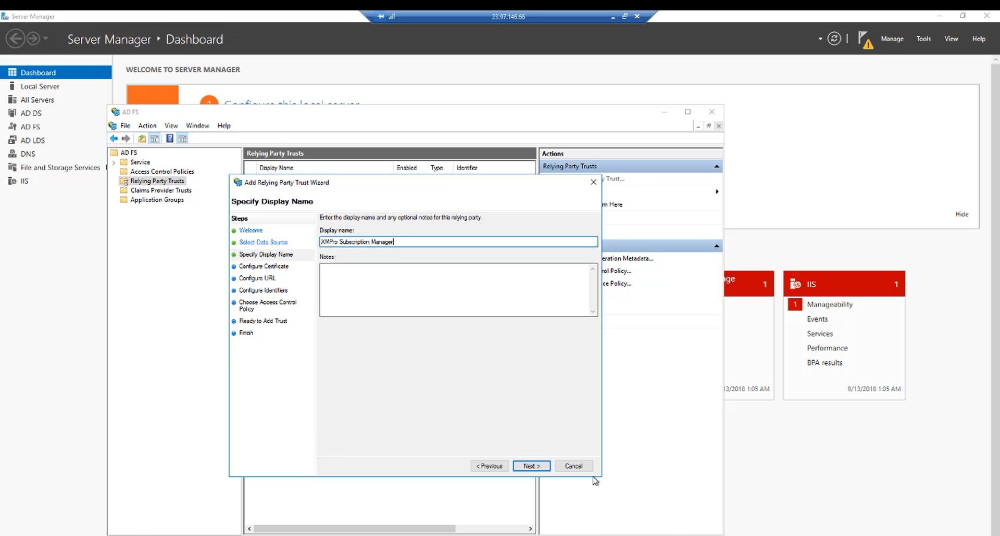
- Select Enable support for the WS-Federation Passive protocol, add the URL and click Next
Note
This is the base URL you copied from the web.config file.
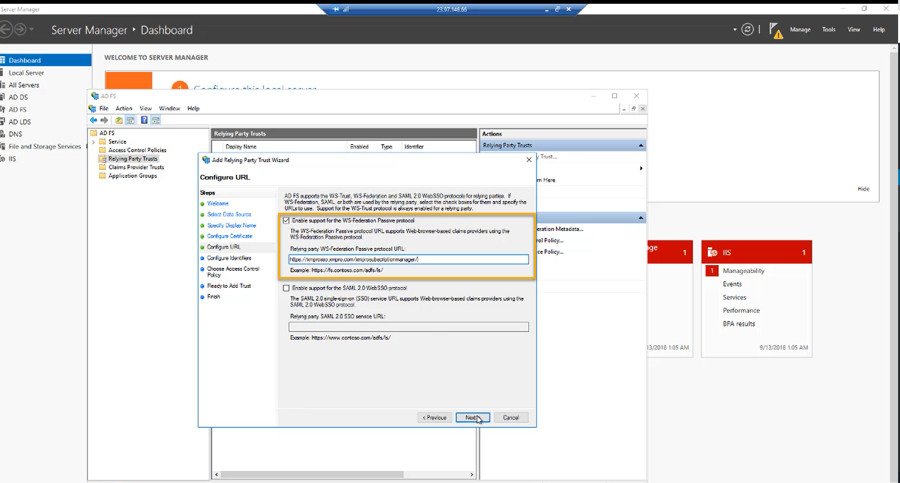
Add the identifier for the application. Use the URL for Subscription Manager
Add the URL and click Next
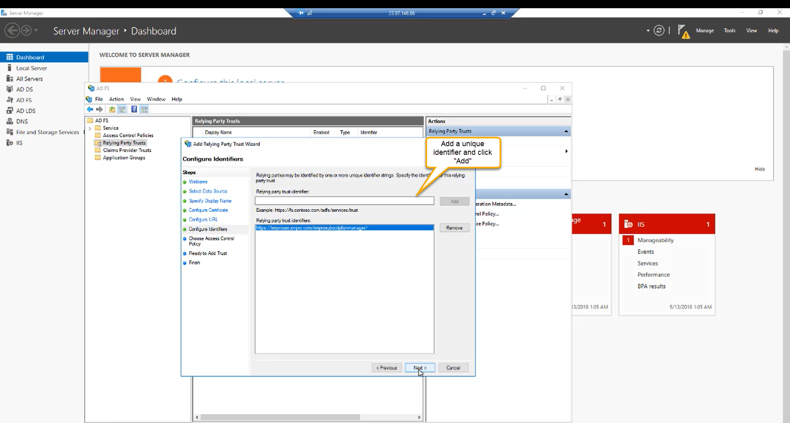
- Choose an access control policy and click Next. Continue to the last screen
Note
For this article, we are going to choose Permit everyone
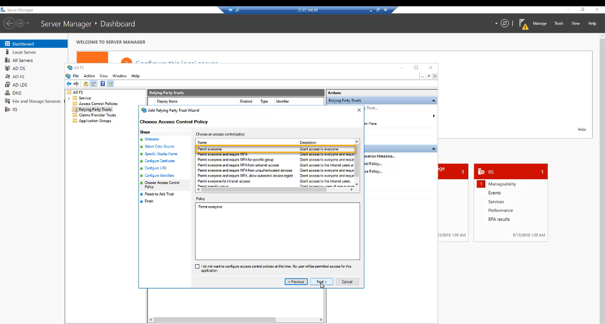
Claims Issuance Policy
- Select Configure claims issuance policy for this application and finish
- In the AD FS Management window, click Edit Claim Issuance Policy… and click Add Rule
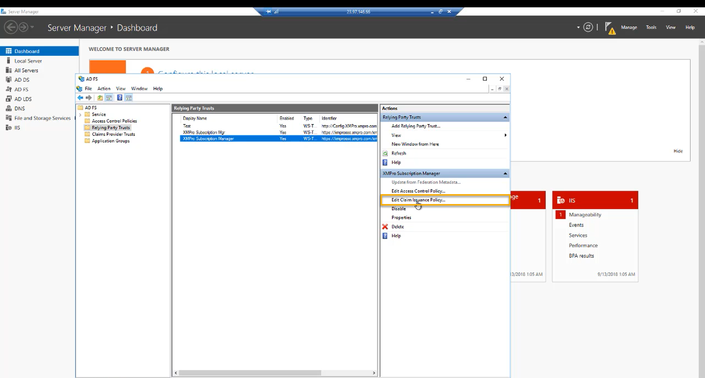
- In the Claim rule template drop-down, select Send LDAP Attributes as Claims and click Next
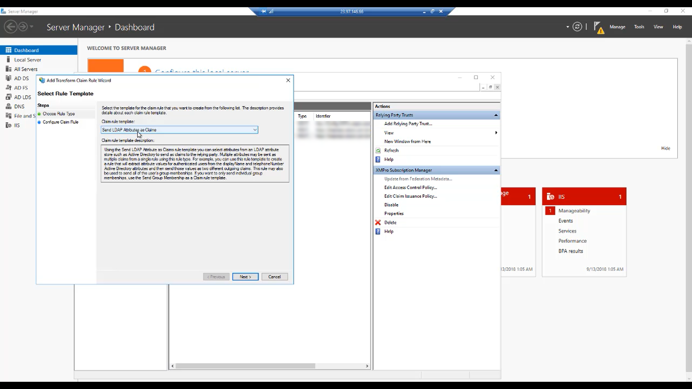
- Choose a name for the rule and map the claims
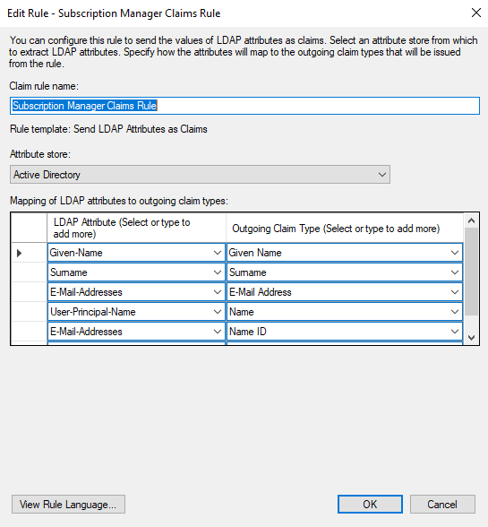
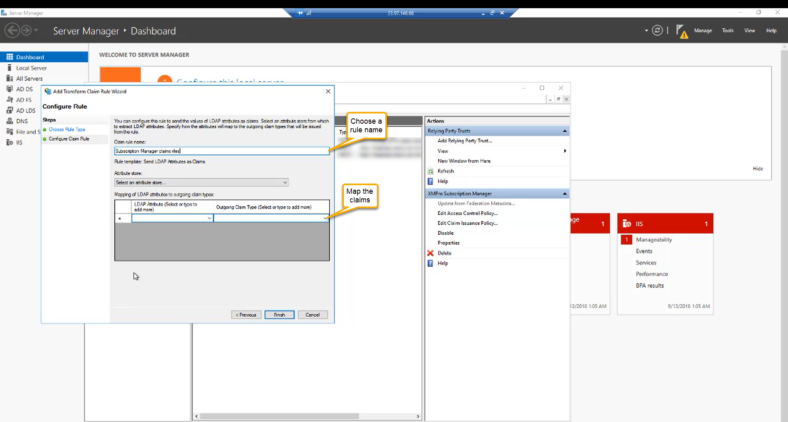
Login to Subscription Manager using AD FS
Now you should be ready. If you navigate to the Subscription Manager application, you will see the AD FS login option. Log in with your AD FS credentials.
Note
You will be asked to link your account when you sign in for the first time. If so, fill in your information and click Link Account
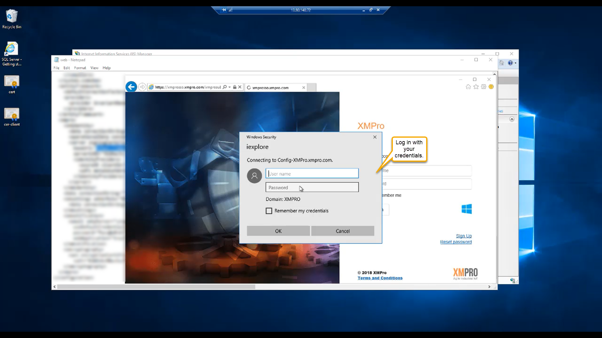
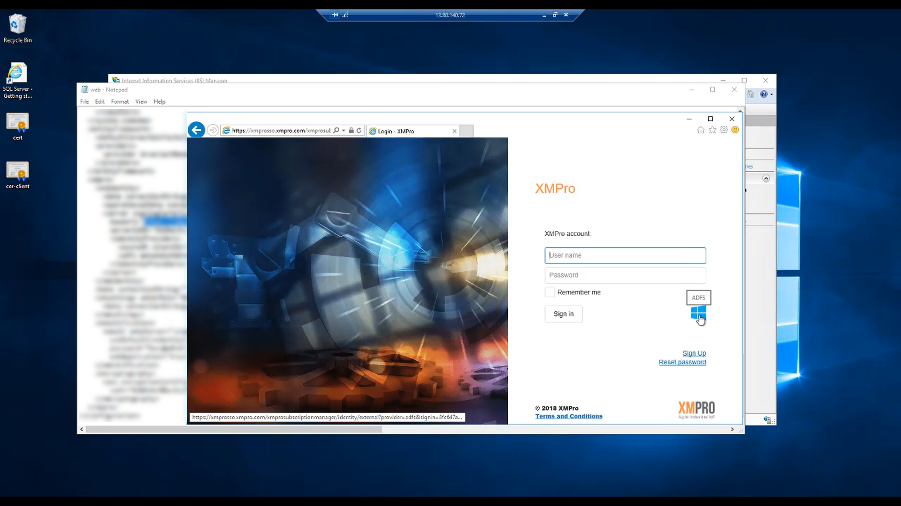
Last modified: May 29, 2025